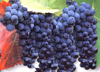
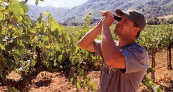
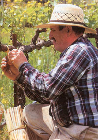
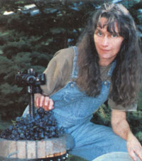
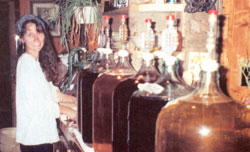

Wine quality is dictated mainly by the grapevines, not by the winemaker.The better the grapes, the better the wine. If you have a proper growing site that has good drainage, access to full sunlight and nutrient-poor soil, you can micromanage their development and pick them at the moment of perfection.
Wine quality also depends on picking the fruit when its not only ripe, but mature, and making sure the harvested fruit is immediately brought to the winery-perhaps your garage or basement-to begin the winemaking process.
Grapevines hate wet feet, so choose a sloped peel site with good drainage. If their roots stand in water, they'll die, or at least they won't produce good grapes. Site your vines on a southeast- to southwest-facing slope so their- leaves can soak up as much sunshine as possible. Sunlight is the powerhouse be hind photosynthesis, driving the process that fills the grapes with sugars, which, after fermentation, become alcohol.
The grape skins contain all of the flavor and color. The larger the grape berries (individual grapes), the less skin and more juice there is. A handful of tiny grapes, however, is almost all skin and no juice, which translates into concentrated, rich color and flavor in the juice, and ultimately, in the wine. Planting grapes in nutrient-poor soil-even dry, poor soil-will stress the vines, keep vine vigor down and produce small grape berries, which is exactly what you want.
The varieties you choose to plant depend on what kind of wine you want to make, and your climate and location. You'll have to decide whether you want to make white wine or red wine. Red wine is much easier to make than white, but the choice boils down to your personal taste preferences.
Choose a variety of grape that not only will make good wine. but will ripen and mature its fruit properly at your site. at least in most years. The best wines come from varieties of the classic European wine grape. Vitis vinifera. Unfortunately most vinifera is suited only to U.S. Department of Agriculture Zones 7 and warmer, and then only in regions with warm. dry summers- which is why California is such a paradise for fine wine grapes. However, I've seen vineyards of chardonnay in Pennsylvania and Lone Island, cabernet sauvignon in Virginia, and Riesling and gewürztraminer in the Finger Lakes region of New Yolk state-and all these are vinifera Though the climate in the Southeast is warm enough for vinifera the summer dampness promotes destructive mildews and rots, and Pierce's disease-a fatal infection of vinifera-is indigenous to the Southeast as far west as the Texas Hill Country.
Visit local wineries or vineyardists to see what they're growing. If they're successfully raising ripe gapes, probably you will be, too. French-American hybrids, a class of vines that are crosses between native American grapes and Vitis vinifera, are hardy in Most of the country. For white wine, 'Seyval Blanc' is among the best. For red, 'Chancellor' and 'Chambourcin' a re excellent choices. Just don't expect the wine to taste like Chateau Latour. French-American hybrid grapes produce wines that reflect their American parent's overt fruitiness with some of the finesse of their vinifera parentage.
Locate your vineyard toward the top, not the frost-prone bottom, of the slope. Run rows north-south so both sides of the vines get sun as the light shifts from east to west during the day. Vines are best spaced 6 feet apart in rows 8 feet wide.
Figure on a gallon of wine per vine each year. Some years will produce a small crop, or you may lose fruit to birds, insects, hail or rot, so plant extra vines to account for any shortfall. One way to lay out the vineyard would be to plant six rows of 12 vines, which would give you a vineyard size of 72 feet by 48 feet. But to give yourself room to turn around at the row ends, make the vineyard at least 80 feet by 54 feet.
Trellis the grapes on a three-wire trellis. Sink 8-foot-long posts 2 feet deep at the end of each row and at 24-foot intervals within each row. That will give you four posts per row. Between the wooden posts, sink 8-foot-long steel fence posts 2 feet deep at 8-foot intervals. Along your 72-foot row you will have a total of four 6-foot-tall wooden posts and six 6-foot-tall steel fence posts. Tightly stretch 13-gauge wire at 40, 52 and 64 inches above the ground. Secure the end posts with earth anchors-large screws with rings on top, twisted into the ground with a bar.
Place a vine at each end of each row and 10 more vines at 6-foot intervals along the rows. Dig generous holes for the vines and loosen the soil deeply to promote good drainage. Don't amend the soil with compost or other fertilizers unless your soil is so poor it won't even grow weeds. In that cage, top-dress the vines with some compost.
The first year, select the strongest shoot and tie it straight up, attaching it to each wire it reaches with a loose piece of string. Don't use wire for securing the vine-it'll damage the tender shoot. Remove shoots that grow from the roots or the vine, but not side shoots that arise from your selected strong shoot. In the dormant season, prune the strong selected shoot back to the middle wire, keeping it tied there. Then prune off any side shoots that arose the previous summer. When the vine's buds begin to grow in the spring, select one on each side of the strong upright shoot and loosely tie them horizontally to the lowest wire as they grow. These will become your vine's arms, from which all the fruiting canes will grow in future years. For more information on training and pruning grapevines, read From Vines to Wines, on MOTHER'S Bookshelf, Page 116.
While tasting the grapes is a fine way to know when to harvest them, also invest in a hydrometer-which measures the specific gravity of liquids-available at winemaking supply shops. This will tell you the sugar content of the berries. A specific gravity between 1.095 and 1.105 is ideal, especially a reading toward 1.105. Sample the grapes so you can learn how grapes taste at their optimum harvest-state. Also examine the seeds. If they are green, let the grapes hang, but don't let them hang any longer if the specific gravity reaches 1.105 or your wine will be overly alcoholic and unbalanced. What you're looking for is seeds that have mostly turned dark, or brownish. When the grape seeds are dark and the sugar level is right, go ahead and harvest.
If you're a winemaking neophyte, start by making a small batch of wine. Fifty pounds of good grapes will yield about 5 gallons of great wine. Winemaking supply shops may be able to procure food-grade plastic vats large enough to Accommodate the grapes, or use several large vitreous crocks.
Dump the ripe grape clusters into the vat or crocks, and crush them. No technology has yet surpassed the human foot for the proper gentle, but thorough, crushing of wine grapes, but the more squeamish may prefer using their hands or a potato masher. When the grapes are crushed, the crocks should be no more than two-thirds full.
To stun wild and unwanted yeast and prevent premature fermentation, you can add the appropriate number of Campden tablets (pre-measured amounts of potassi um metabisulfite) to the crushed grapes-usually one tablet per gallon of wine. Cover the crock with a towel and let it sit for a day.
The following day, add a packet of wine yeast (not bread yeast) to the must, as the crushed gapes are called. Montrachet is the most commonly used type of yeast for red wine; prix de mousse also is used. After stirring in the yeast, use your hands to comb through the must and remove the cluster stems. Squeeze off any berries that may still be clinging to the stems. Leave no more than a few stems in the must, as too many can add too much raw tannin and leave the wine tasting "stemmy." Cover the crock with a towel (to prevent bacteria-carrying fruit flies from invading) and set the crock aside. In a day or two it will start fizzing. By three days, it will look like it's boiling.
After about a week, the fizzing will have almost subsided. Separate the new wine from the skins, pulp and seeds. If you have a wine press, use it. Otherwise dump the contents of the crocks or vat into food-grade plastic mesh bags or cheesecloth and squeeze out as much wine as you can into a clean basin. Then pour the wine through a strainer and funnel that's set into the mouth of a 5-gallon glass carboy (the kind used for dispensing drinking water; they're also available at winemaking shops) or into the bunghole of a clean, empty wine barrel.
Fill the carboy just to the neck, but not so full that bubbles from residual fizzing will reach the mouth. If you're using a barrel, fill it to within an inch of the bunghole. Until now, the wine has been in contact with air, and that's been beneficial. From this point on, air is the enemy and must be kept away from the wine. Simple devices called airlocks, sold at winemaking shops, allow gas bubbles out, but prevent air from coming back in. If you're using a carboy, use a rubber stopper with a hole in the center for the airlock. If you're using a barrel, use a silicone or rubber bung with a hole in the center for an airlock that fits the barrel's opening.
After about two or three weeks in the carboy or barrel, all fizzing should have stopped. Once the fizzing is completely finished, you'll need to do a first racking. Racking is the winemaking term for drawing the wine off the lees, which is the spent yeast, grape bits and general sludge that falls to the bottom of the carboy or barrel. Use foodgrade, clear-plastic siphon hose, available at winemaking shops, to siphon the clear wine into clean carboys, then rinse the lees from the old carboys or barrel using a garden hose with a strong jet of water. Reintroduce the wine back into the rinsedout carboys or barrel by pouring it through a funnel. Now cork the carboys with solid rubber stoppers-no holes or airlocks-or stopper the barrel with a solid silicone bung. Store the wine in a cool, dark place, such as a basement corner away from a furnace.
Two to three months after the primary racking, do a second racking. This time the lees will be far fewer and the wine you draw off will be clear. Three to four months later, do a third and final racking. This time the wine should be very clear. If it's hazy, you'll have to do an egg-white fining. Carefully separate one white from its yolk, being extra careful not to let a speck of yolk get in the white. One white is enough for 10 gallons of wine. Thoroughly stir half a well-beaten white into each 5-gallon carboy full of wine or six well-beaten whites into the barrel of wine. Wait a week and then rack the wine again. The whites should remove the haze. They also will remove some tannin, a phenolic compound that helps give structure to the wine, so don't fine unless absolutely necessary. If, after egg-white fining, the wine remains hazy, it always will be hazy. If it tastes good, keep it. If it doesn't, compost it and try again next year.
You can age wine in carboys in a cool, completely dark place, or in a barrel in a cool place. Make sure the carboys or barrel are topped off. If you don't have your own wine left to top off with, use a similar wine.
Check the level of the wine monthly, adding enough similar wine to top off the carboys or barrel so no air can enter. Most home winemakers bottle after one year, but I think aging wine two years is better. If you're using a new oak barrel, however, bottle the wine after one year or less, or it may get too "oaky" tasting. (To season a new barrel, rinse and fill it with a solution of potassium metabisulfite and water, until you're ready to fill it with wine.)
When you're satisfied with your vintage, siphon wine from the container into old wine bottles you have saved or new bottles purchased from a winemaking shop. They should be scrupulously clean. You also will need corks and a corking device, available at a winemaking shop. You can buy foil capsules for the top of the bottle and make or buy your own labels, attaching them with a glue stick.
And when the time is right, you can uncork a bottle of your finest vintage and enjoy the fruits of your labor.
If you're wild about wine, and want to go organic, you're in luck: A number of wineries now are producing organic wines that rival conventionally produced vino. The purist might want to consider truly organic wines, processed from pesticide- and herbicide-free grapes, with no added sulfites. Others less concerned with added sulfites can satisfy their organic cravings with wine labeled "made from organic grapes."
Wineries with widely distributed organic wines include Badger Mountain, Bonterra, China Bend, Frey, Honeyrun, LaRocca, Lolonis, Nevada Wine Guild, Octopus Mountain, Organic Wine Works and Orleans Hill.
Wine distributors can be a useful resource for finding organic wine in your area. Organic Vintages, based in New York, has a toll-free number and will assist in finding organic wines nationwide [(800) 877-6655].
Another option is to order organic wine by mail, but in many places shipping wine is restricted by state law. Whether or not wine can be shipped to you directly from the vintner depends on where you live and from which state you are trying to order wine.
The states that currently have the fewest restrictions on shipping are California, Colorado, Hawaii, Idaho, Illinois, Iowa, Minnesota, Missouri, New Mexico, Oregon, Washington, West Virginia and Wisconsin. Regulations vary even among these states, but wineries should be able to tell you whether or not they can legally ship wine to you.
For more information about wineshipping laws, visit www.wineinstitute.org/shipwine/ .
Many of the following sources for winemaking hardware also can put you in touch with shippers of wine grapes-fresh or frozen, conventional or organic.
Country Wines
3333 Babcock Blvd.
Pittsburgh, PA 15237
(412) 366-0151
www.countrywines.com
Ingredients, yeasts and airlocks.
E.C. Kraus
733 S. Northern Blvd.
Independence, MO 64054
(816) 254-7448
www.eckraus.com
Home winemaking supplies.
Orchard Valley Supply
1521 Mountain View Drive
Quakertown, PA 18951
(888) 755-0098
www.orchardvalleysupply.com
Vineyard hardware-supply company
with trellising equipment.
Presque Isle Wine Cellars
9440 W. Main Road
North East, PA 16428
(814) 725-1314
www.piwine.com
Home winemaking equipment, yeasts.
Prospero Equipment Corp.
134 Marble Ave.
Pleasantville, NY 10570
(888) 732-1222
Pumps to rack and transfer your wines
from container to container.
Seguin-Moreau Barrel Co.
151 Camino Dorado
Napa, CA 94558
(707) 252-3408
www.seguin-moreau.fr
Topquality French oak barrels.
The Compleat Winemaker
955 Vintage Ave.
St. Helena, CA 94574
(707) 963-9681
www.tcw-web.com
Winemaking equipment for operations
large and small.
Tonnellerie Mercier
Route 2 Box 756
Montross, VA 22520
(804) 493-9186
www.tonnellerie-mercier.com
Specializes in French oak barrels.
Waterloo Container Co.
PO. Box 262
Waterloo, NY 13165
(888) 539-3922
www.waterloocontainer.com
Wine bottles, corks and capsules.
WindRiver Brewing Co.
7212 Washington Ave. S.
Eden Prairie, MN 55344
(800) 266-4677
www.windriverbrew.com
Home winemaking supplies.
Federal regulations allow any person of legal drinking age to produce wine for personal or family use, but not to sell. A household with one adult may produce 100 gallons of tax-free wine per calendar year. A household with two or more adults may produce 200 gallons. This does not extend to partnerships, corporations or associations, and it does not override state or local laws. For more information, visit www.wineinstitute.org/fedlaw/regs .
American Nursery
Route 1 Box 87B1
Madison, VA 22727
(540)948-5064
Sells vinifera, French-American
hybrids and native grape varieties
Concord Nurseries Inc.
10175 Mileblock Road
North Collins, NY 14111
(800) 223-2211
www.concordnurseries.com
Sells vinifera and hybrids
Duarte Nursery Inc.
1555 Baldwin Road
Hughson, CA 95326
(800) GRAFTED
www.duartenursery.com
Supplier of vines to California viticulture;
Minimum order of 100 vines
Miller Nurseries
5060 West Lake Road
Canandaigua, NY 14424
(800) 836-9630
www.millernurseries.com
Native American vines and FrenchAmerican hybrids
Braintree Nursery
391 Butts Road
Morton, WA 98356
(360) 496-6400
www.raintreenursery.com
Vinifera and French-American hybrids
Vintage Nurseries
27920 McCombs Ave.
Wasco, CA 93280
(800) 499-9019
www.vintagenurseries.com
Vinifera vines for the Southwest
|
 In the field, the sugar content of grapes can be measured with a hand refractometer. |
 CHRIS POULSEN (2) Grapevine side shoots are trained along the horizontal wire stringers by securing them with flexible ties. |
 JOSEPH JENKINS |
|
 |
 |
|